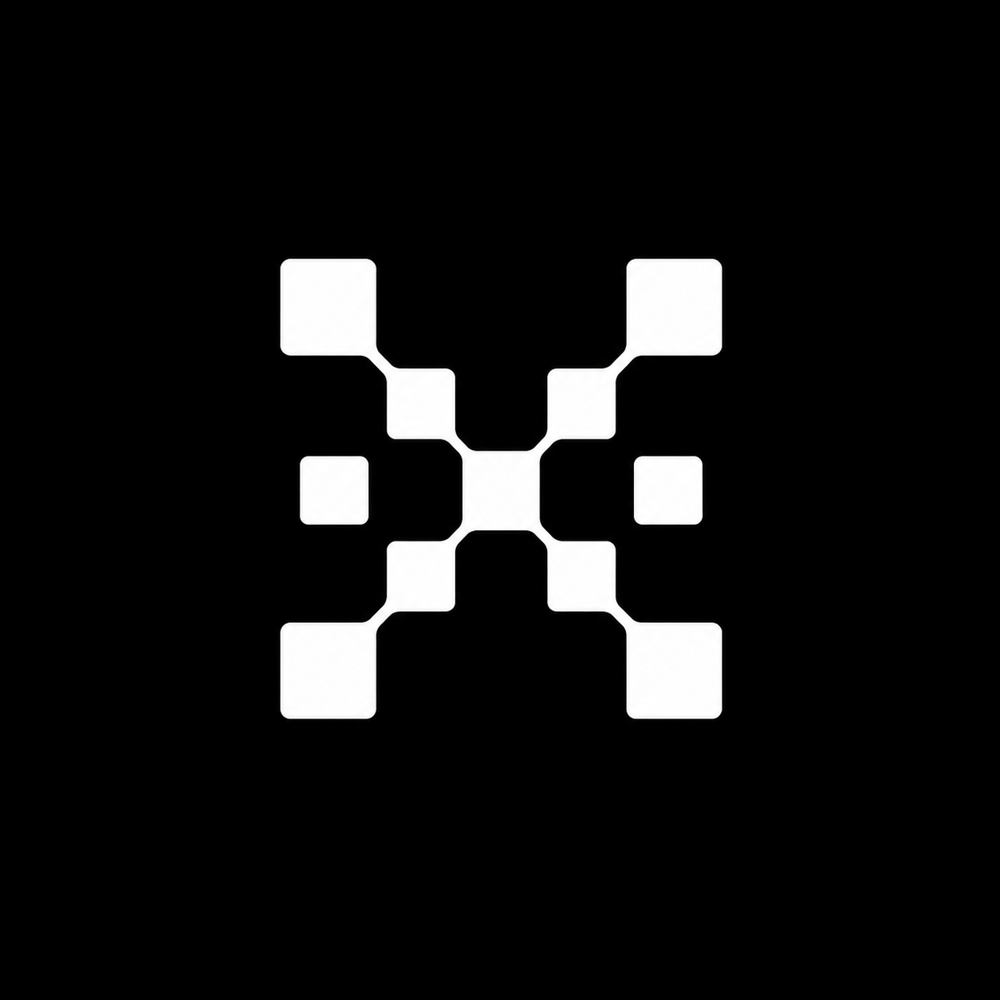
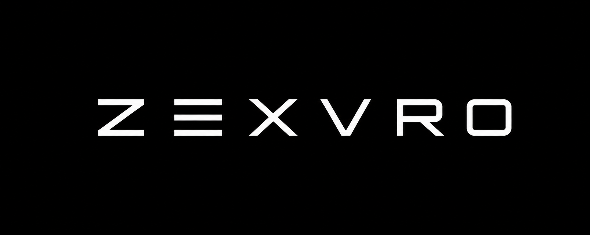

Private
Use zero-knowledge direction where business data needs confidentiality.

ZEXVRO Explore
ZEXVRO // Agent-ready infrastructure
ZEXVRO helps teams move Web2 products into private, verifiable, agent-ready Web3 infrastructure without forcing developers to manage blockchain complexity by hand.
ZEXVRO is built for teams that want verifiable infrastructure, privacy, identity, deployment, and agent workflows without turning the whole company into protocol operators.
The experience is calm and developer-first: simple APIs, clear service boundaries, approval-first agents, and a dashboard that makes advanced Web3 capabilities understandable.
Use zero-knowledge direction where business data needs confidentiality.
Expose proof, audit, and settlement flows through usable product surfaces.
Let human teams and platform agents share context without losing control.
Keep Web3 rails behind APIs, SDKs, CLI flows, and predictable dashboards.
The Transformation Agent inspects repositories, explains what needs to change, and helps teams move toward Web3-ready infrastructure with memory, tools, and human approval.
Scattered deployment logic, unclear migration paths, missing context.
Readable plans, agent memory, controlled actions, and deployable rails.
ZEXVRO starts with the infrastructure teams actually need before they can ship serious Web3 products.
Make sensitive business activity private while keeping verification paths.
Inspect codebases, preserve workspace memory, and guide Web3 migration work.
Give agents a controlled way to negotiate offers and settlement state.
Classify humans and agents at access boundaries with clear platform controls.
Expose digital asset workflows through clean product APIs and dashboard flows.
Bring decentralized physical infrastructure into the same operating surface.
The monochrome grid is intentional: ZEXVRO should feel precise, professional, and legible while the system underneath handles privacy, agents, trade, identity, assets, and network operations.